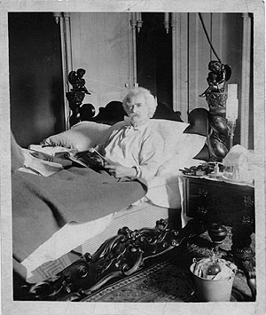

Inside New York

picture
courtesy of "Mark Twain in His Times"
"It
was always lonesome and home-sicky in New York, with Clara and Jean
seldom in sight and
no guests but 2-hour and 3-hour luncheonites and dinnerites." letter to Emilie Rogers, 8.6.1908,
Redding, CT, as quoted in Mark Twain's Correspondance With Henry
Huttleson Rogers
back to exterior